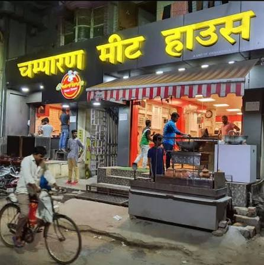
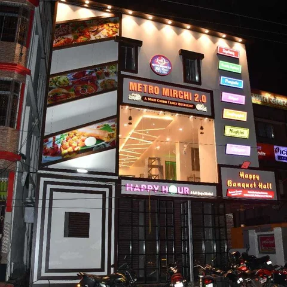

FOOD & DINE-OUT
Mostly vegetarian, distinctly Bihari, and built around rice, lentils, and a good chokha.
What's on the plate
Bhagalpuri home cooking runs on rice, wheat, and lentils, dressed up with mustard oil and spices like cumin, fennel, and ajwain. A traditional thali usually features chapati, rice, dal, chutney, achar, and — the local specialty — chokha: mashed roasted brinjal, potato, or tomato mixed with onion, garlic, and mustard oil.
- Litti Chokha — roasted wheat balls stuffed with spiced sattu, served with chokha; the city's signature dish.
- Chana Ghugni — a spiced chickpea curry, popular as a snack or light meal.
- Kadhi Bari & Khichdi — comfort food, especially in the cooler months.
- Sweets — khaja, malpua, khurma, laung-latika, and chandrakala round out the local dessert table.
Where to dine out
Bhagalpur's dine-out scene ranges from family-style multicuisine restaurants to fast-food counters and rooftop cafés. Names that regularly come up with locals and visitors include Mother's Kitchen (known for its seafood and fish dishes), Kesaria Restaurant (rooftop dining), Grill Paradise and Metro Mirchi (Indian and Chinese), Utsav Khana Khazana (family dining), the Mughlai-and-North-Indian favourite Zaika, and Champaran Meat House near Zero Mile for Champaran-style meat dishes. For something more relaxed, cafés like Pine Villa Cafe and Cafe Midtown serve coffee, snacks, and multicuisine plates.
Restaurant scenes change fast — it's worth double-checking current hours and menus before you go.


